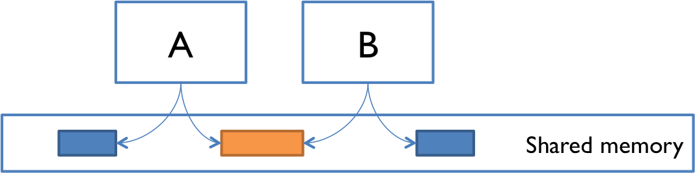
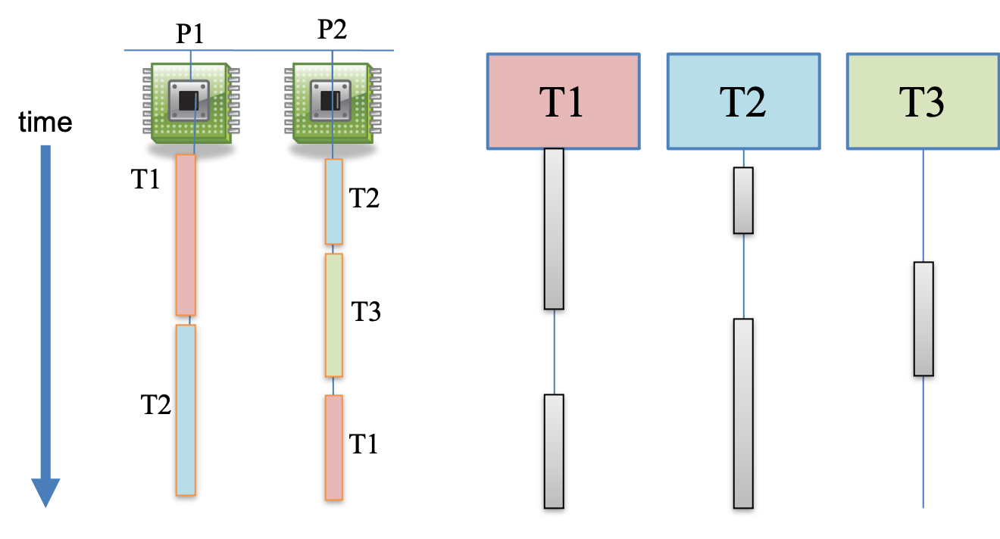
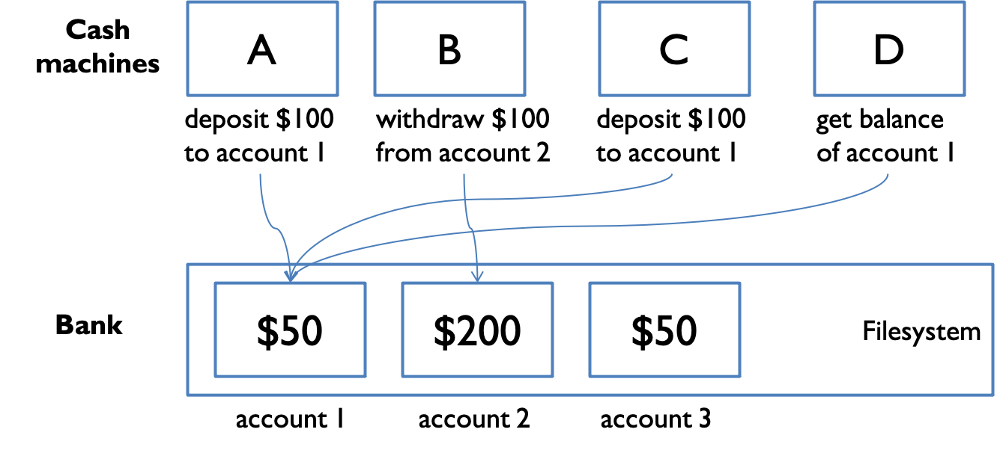
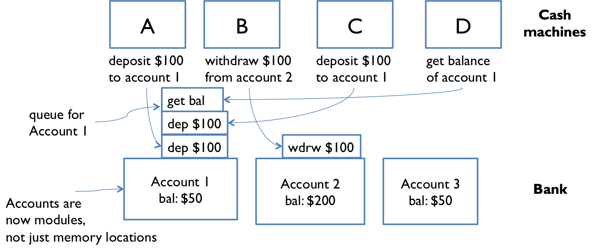
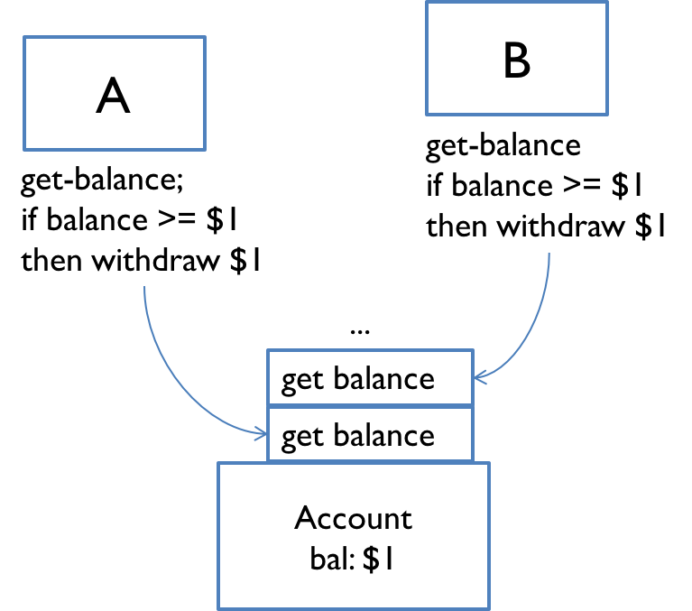

Reading 14: Concurrency
Software in 6.102
Objectives
This reading introduces the following ideas:
Concurrency
Concurrency means multiple computations are happening at the same time. Concurrency is everywhere in modern programming, whether we like it or not:
- Multiple computers in a network
- Multiple applications running on one computer
- Multiple processors in a computer (today, often multiple processor cores on a single chip)
In fact, concurrency is essential in modern programming:
- Web sites must handle multiple simultaneous users.
- Mobile apps need to do some of their processing on servers (“in the cloud”).
- Graphical user interfaces almost always require background work that does not interrupt the user. For example, Visual Studio Code compiles your TypeScript code while you’re still editing it.
Being able to program with concurrency will still be important in the future. Processor clock speeds are no longer increasing. Instead, we’re getting more cores with each new generation of chips. So in the future, in order to get a computation to run faster, we’ll have to split up a computation into concurrent pieces.
Two models for concurrent programming
There are two common models for concurrent programming: shared memory and message passing.

A and B might be two processors (or processor cores) in the same computer, sharing the same physical memory.
A and B might be two programs running on the same computer, sharing a common filesystem with files they can read and write.
A and B might be two threads in the same program (we’ll explain what a thread is below), sharing the same objects.

Message passing. In the message-passing model, concurrent modules interact by sending messages to each other through a communication channel. Modules send out messages, and incoming messages to each module are queued up for handling. Examples include:
A and B might be two computers in a network, communicating by network connections.
A and B might be a web browser and a web server – A opens a connection to B and asks for a web page, and B sends the web page data back to A.
A and B might be two programs running on the same computer whose input and output have been connected by a pipe, like
ls | greptyped into a command prompt.
Processes, threads, time-slicing
Process. A process is an instance of a running program that is isolated from other processes on the same machine. In particular, it has its own private section of the machine’s memory.
Abstractly, you can think about a process as a virtual computer. It makes the program feel like it has the entire machine to itself – like a fresh computer with its own memory, just to run that program.
Just like computers connected across a network, processes normally share no memory between them. A process can’t access another process’s memory or objects at all. Sharing memory between processes is possible on most operating systems, but it needs special effort. By contrast, a new process is automatically ready for message passing, because it is created with standard input & output streams.
Whenever you start a program on your computer, a fresh process is created as well, to contain the running program.
Thread. A thread is a locus of control inside a running program. Think of it as a place in the program that is being run, plus the stack of function calls that led to that place (so the thread can go back up the stack when it reaches return statements).
Just as a process represents a virtual computer, a thread represents a virtual processor. Making a new thread simulates making a fresh processor inside the virtual computer represented by the process. This new virtual processor runs the same program and shares the same memory as other threads in the process. So, we can say that a process contains threads.
Threads are automatically ready for shared memory, because threads share all the memory in the process. It takes special effort to get “thread-local” memory that’s private to a single thread.
Whenever you run a TypeScript/JavaScript program, the program starts with one thread, which starts executing the file you are running as its first step.

Time slicing. How can you have many concurrent threads with only one or two processors in your computer? When there are more threads than processors, concurrency is simulated by time slicing, which means that the processor switches between threads. The figure on the right shows how three threads T1, T2, and T3 might be time-sliced on a machine that has only two actual processors. In the figure, time proceeds downward, so at first, processor P1 is running thread T1, and processor P2 is running thread T2, and then processor P2 switches to run thread T3. Thread T2 simply pauses, until its next time slice on the same processor or another processor. The far right part of the figure shows how this looks from each thread’s point of view. Sometimes a thread is actively running on a processor, and sometimes it is suspended waiting for its next chance to run on some processor. Notice that a thread is only ever run on at most one processor; it wouldn’t make sense for a thread to be run on multiple processors at the same time.
When threads are running at the same time on two different processors, they are said to be running in parallel and thus give rise to parallelism in software. If the threads were instead sharing the same processor, time-sliced with each other, they would be concurrent, but not parallel.
Even without parallelism, though, concurrency can be tricky. On most systems, time slicing happens unpredictably and nondeterministically, meaning that a thread may be paused or resumed at any time.
Threads in Python
Let’s first look at how threads work in Python. Python’s API for threads is similar to that provided by other object-oriented languages, including Java.
In Python, you start a new thread by making an instance of Thread and telling it to start().
You provide code for the new thread to run by passing a function to the Thread constructor.
The first thing the new thread will do is call this function.
For example:
from threading import Thread
def hello():
print("Hello from a thread!")
t = Thread(target=hello) # makes a thread that is ready to call hello()
t.start() # actually calls hello() in the new threadreading exercises
Suppose we run this Python program, which contains bugs:
from threading import Thread
clotho = Thread(target=lambda : print('spinning'))
clotho.start()
Thread(target=lambda : print("measuring")).start()
Thread(target=lambda : print("cutting"))How many new Thread objects are created during the execution of this program?
(missing explanation)
(missing explanation)
What is the maximum number of threads that might be running at the same time?
(missing explanation)
Workers in TypeScript
TypeScript does not have user-accessible threads, but it does have an abstraction called Worker.
Sometimes called Web Workers because the API first appeared in web browsers, the API is also supported by Node.
A Worker is created by specifying the JavaScript file that it should execute as its starting point.
For example, suppose we already have the file hello-world.js created by compiling this TypeScript code:
// hello-world.ts (compiles to hello-world.js)
console.log('Hello from a worker!')Then we can start a worker for it like this:
let worker: Worker = new Worker('./hello-world.js');
// ...This code will immediately start creating a new environment for the Worker, begin executing hello-world.js, and print the hello message.
It will also continue concurrently executing the code that started the worker.
Note that new Worker expects a JavaScript file (.js). If the worker code is written in TypeScript, it must first be compiled to JavaScript before a worker can be started with it.
Both the Mozilla and Node documentation for workers calls them threads, but their behavior is much more like separate processes:
Like threads, workers can access shared memory using
SharedArrayBufferto share binary data.But like processes, each new
Workerruns its JavaScript file in a fresh global environment. When it imports a module, it loads a fresh private copy of that module; it does not share the module with other workers. Workers cannot share variables or instances of regular objects.Instead, because their shared memory capability is very limited, workers generally communicate by message-passing. A bidirectional message passing communication channel is automatically set up between the code that creates a
Workerand the code running inside thatWorker.
Overall, we can think of a Worker as a lightweight process.
reading exercises
For this code that starts a worker when we run the main file:
// hello-world.ts (compiles to hello-world.js)
console.log('Hello from a worker!')// main.ts (compiles to main.js)
const worker: Worker = new Worker('./hello-world.js');Put the following events in the order that they occur.
(missing explanation)
Given these files compiled to .js files of the same names…
| | |
// main.ts
new Worker('./nona.js');
new Worker('./decima.js');
new Worker('./morta.js');What is the maximum number of workers that might be running at the same time?
(missing explanation)
What is the minimum number of workers that will definitely be running at the same time?
(missing explanation)
Which of the following console outputs are possible?
(missing explanation)
When an exception is thrown in a worker thread and not caught, Node’s default behavior is to print a stack trace and terminate the entire program.
So given these files compiled to .js files of the same names…
| | |
// main.ts
new Worker('./nona.js');
new Worker('./decima.js');
new Worker('./morta.js');Which of the following console outputs are possible?
(missing explanation)
Shared memory example
We’ll use the filesystem as our shared memory for this example.

Imagine that a bank has cash machines that use a shared memory model: a common filesystem. The information about a bank account is stored in a file, and all the cash machines can read and write that file to update the account.
To illustrate what can go wrong, let’s simplify the bank down to a single account, with its dollar balance stored as text in a file named account:
import fs from 'node:fs';
// suppose all the cash machines share a single bank account, stored in a file named `account`
export function readBalance(): number {
const fileData = fs.readFileSync('account.txt').toString();
return parseInt(fileData);
}
export function writeBalance(balance: number): void {
fs.writeFileSync('account.txt', balance.toString());
}
Two operations deposit and withdraw update that file to simply add or remove a dollar:
function deposit(): void {
let balance = readBalance();
balance = balance + 1;
writeBalance(balance);
}
function withdraw(): void {
let balance = readBalance();
balance = balance - 1;
writeBalance(balance);
}
Customers use the cash machines to do transactions like this:
deposit(); // put a dollar in
withdraw(); // take it back outEach transaction is just a one-dollar deposit followed by a one-dollar withdrawal, so it should leave the balance in the account unchanged. Throughout the day, each cash machine in our network is processing a sequence of deposit/withdraw transactions:
// in cash-machine.ts
// each ATM does a bunch of transactions that
// modify balance, but leave it unchanged afterward
for (let txn = 0; txn < TRANSACTIONS_PER_MACHINE; ++txn) {
deposit(); // put a dollar in
withdraw(); // take it back out
}If we start the day with, say, $200 in the account, then at the end of the day, regardless of how many cash machines were running, or how many transactions we processed, we should expect the account balance to be unchanged at $200:
// start with a balance of 200
writeBalance(200);
for (let machine = 0; machine < NUMBER_OF_CASH_MACHINES; ++machine) {
new Worker('./cash-machine.js'); // runs the cash-machine code just above
}But if we run this code, we discover frequently that the balance at the end of the day is not $200. If more than one worker is running at the same time – say, on separate processors in the same computer – then balance may not be unchanged at $200 at the end of the day. Why not?
Interleaving
Here’s one thing that can happen. Suppose two cash machine workers, A and B, are both working on a deposit at the same time. Here’s how the deposit() step breaks down into lower-level instructions:
When A and B are running concurrently, these instructions can interleave with each other, meaning that the actual sequence of execution can intersperse A’s operations and B’s operations arbitrarily. (Some operations might very well be simultaneous or overlapping if A and B run on separate processors, but let’s just worry about interleaving for now.) Here is one possible interleaving:
| A | B |
|---|---|
| A readBalance() returns 200 | |
| A add 1 | |
| A writeBalance(201) | |
| B readBalance() returns 201 | |
| B add 1 | |
| B writeBalance(202) |
This interleaving is fine – we end up with balance 202, so both A and B successfully put in a dollar. But what if the interleaving looked like this:
| A | B |
|---|---|
| A readBalance() returns 200 | |
| B readBalance() returns 200 | |
| A add 1 | |
| B add 1 | |
| A writeBalance(201) | |
| B writeBalance(201) |
The balance is now 201 – A’s dollar was lost! A and B both read the balance at the same time, computed separate final balances, and then raced to store back the new balance – which failed to take the other’s deposit into account.
Race condition
This is an example of a race condition. A race condition means that the correctness of the program (the satisfaction of its specs and preservation of its invariants) depends on the relative timing of events in concurrent computations A and B. When this happens, we say “A is in a race with B.”
Some interleavings of events may be OK, in the sense that they are consistent with what a single, nonconcurrent process would produce, but other interleavings produce wrong answers – violating specs or invariants.
reading exercises
writeBalance(1);
new Worker('./A.js');
new Worker('./B.js');with the essential parts of the code for A.js and B.js:
// A.js
writeBalance(readBalance() * 2);
writeBalance(readBalance() * 3);// B.js
writeBalance(readBalance() * 5);Suppose worker A and worker B run sequentially, i.e. first one and then the other. What is the final value of the account balance?
(missing explanation)
Message passing example
Now let’s look at the message-passing approach to our bank account example.

Now not only is each cash machine a module, but each account is a module, too. Modules interact by sending messages to each other. Incoming requests are placed in a queue to be handled one at a time (for example, the figure shows three pending requests queued for account 1). The sender doesn’t stop working while waiting for an answer to its request. It handles more requests from its own queue. The reply to its request eventually comes back as another message.

Unfortunately, message passing doesn’t eliminate the possibility of race conditions. Suppose each account supports get-balance and withdraw operations, with corresponding messages. Two users, at cash machines A and B, are both trying to withdraw a dollar from the same account. They check the balance first to make sure they never withdraw more than the account holds, because overdrafts trigger big bank penalties:
send get-balance message, and store the reply in local variable bal
if bal >= 1 then send withdraw-1-dollar messageThe problem is again interleaving, but this time interleaving of the messages sent to the bank account, rather than the instructions executed by A and B. If the account starts with one dollar in it, then what interleaving of messages will fool A and B into thinking they can both withdraw a dollar, thereby overdrawing the account?
reading exercises
Cash machines A and B are trying to withdraw a dollar from the same account without overdrawing it, by sending messages get-balance and withdraw to the bank according to the following pseudocode:
send get-balance message, and store the reply in local variable bal
if bal >= 1 then send withdraw-1-dollar messageSuppose the account has only $1 in it. For each of the following interleavings of messages received by the bank, is the interleaving possible or impossible, and is the account safe (balance never goes below 0) or overdrawn (balance becomes negative)?
(missing explanation)
(missing explanation)
(missing explanation)
One lesson here is that you need to carefully choose the operations of a message-passing model. withdraw-if-sufficient-funds would be a better operation for these clients than just withdraw.
Concurrency is hard to test and debug
If we haven’t persuaded you that concurrency is tricky, here’s the worst of it. It’s very hard to discover race conditions using testing. And even once a test has found a bug, it may be very hard to localize it to the part of the program causing it.
Concurrency bugs exhibit very poor reproducibility. It’s hard to make them happen the same way twice. Interleaving of instructions or messages depends on the relative timing of events that are strongly influenced by the environment. Delays can be caused by other running programs, other network traffic, operating system scheduling decisions, variations in processor clock speed, etc. — all things the programmer has little to no control over. Each time you run a program containing a race condition, you may get different behavior.
These kinds of bugs are heisenbugs, which are nondeterministic and hard to reproduce, as opposed to a bohrbug, which shows up repeatedly whenever you look at it. Almost all bugs in sequential programming are bohrbugs.
A heisenbug may even disappear when you try to look at it with console.log or a debugger! The reason is that printing and debugging are so much slower than other operations (often 100-1000x slower), that they dramatically change the timing of operations, and the interleaving.
So it can be easy to fool yourself into thinking that you’ve fixed a concurrency bug just by inserting a print statement.
But it’s only masked, not truly fixed. A change in timing somewhere else in the program may suddenly make the bug come back.
It’s harder to hide a concurrency bug with a print statement in the TypeScript bank account example, using workers reading and writing a shared file, because file access is comparably slow to printing. But the heisenbug phenomenon still exists, and would certainly crop up if you stopped one of the cash machines at a breakpoint and tried to step through it with a debugger – the other cash machine would be able to run to completion without interference, and the problem would appear to go away.
Concurrency is hard to get right. Part of the point of this reading is to scare you a bit. Over the next several readings, we’ll see principled ways to design concurrent programs so that they are safer from these kinds of bugs.
reading exercises
You’re running a test suite (for code written by somebody else), and some of the tests are failing. You add debugging print statements to the one function called by all the failing test cases, in order to display some of its local variables, and the test cases suddenly start passing. Which of the following are likely to be part of the explanation for this behavior?
(missing explanation)
Summary
- Concurrency: multiple computations running simultaneously
- Shared-memory & message-passing paradigms
- Processes & threads
- Process is like a virtual computer; thread is like a virtual processor in that virtual computer
- A TypeScript
Workeris like a lightweight process. - Time slicing allows a processor to switch between multiple threads
- Race conditions
- When correctness of result (postconditions and invariants) depends on the relative timing of events
These ideas connect to our three key properties of good software mostly in bad ways. Concurrency is necessary but it causes serious problems for correctness. We’ll work on fixing those problems in the next few readings.
Safe from bugs. Concurrency bugs are some of the hardest bugs to find and fix, and require careful design to avoid.
Easy to understand. Predicting how concurrent code might interleave with other concurrent code is very hard for programmers to do. It’s best to design your code in such a way that programmers don’t have to think about interleaving at all.
Ready for change. Choosing the right concurrency design — for example which data are in shared memory, or what the messages are in a message-passing protocol — will not only prevent bugs now, but it will influence how easy it is to accommodate different changes in the future.